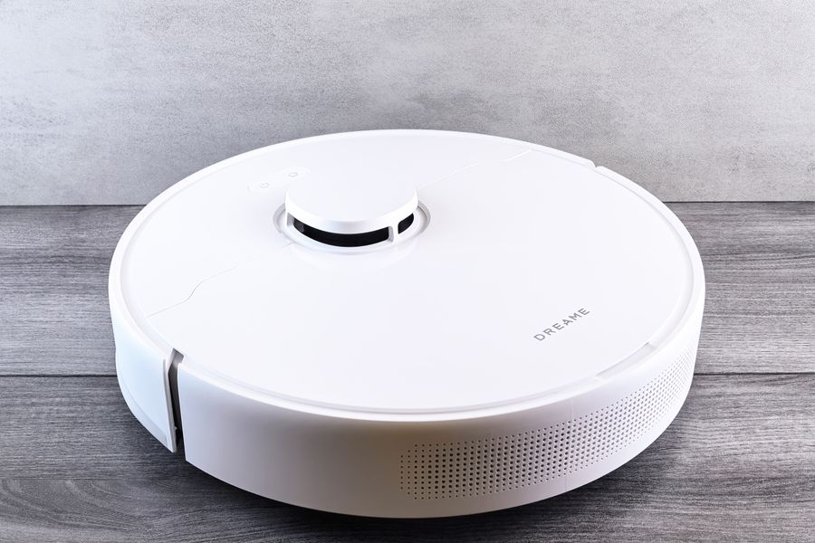
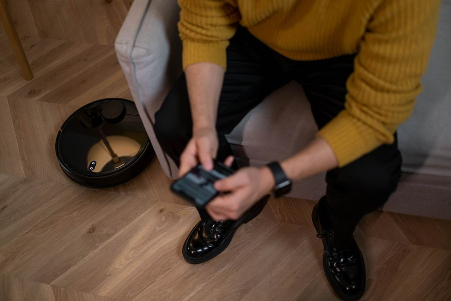

Los mejores robots aspiradores en calidad-precio
Todos los anuncios compiten con el mismo número: los pascales de succión. 4.000 Pa, 8.000 Pa, 12.000 Pa. Es el dato que menos va a determinar si estás contento con el aparato.
Lo que de verdad separa un robot bueno de uno malo es cómo ve tu casa.
Resumen rápido
| Modelo | Mejor para | |
|---|---|---|
| Robot aspirador con LiDAR | La compra correcta en esta categoría | Ver en Amazon |
| Robot aspirador con base de autovaciado | Casas con mascotas | Ver en Amazon |
| Robot aspirador económico | Probar sin gastarse mucho | Ver en Amazon |
Los mejores en calidad-precio

La compra correcta en esta categoría
Robot aspirador con LiDAR
A favor
- Dibuja el plano de la casa y limpia en líneas ordenadas
- Zonas prohibidas y limpieza por habitaciones
- Vuelve solo a cargar y sigue donde lo dejó
En contra
- La torreta lo hace más alto: mide si quieres que pase bajo el sofá
Si solo te fijas en una cosa, que sea esta. Un robot con LiDAR de gama media limpia mejor que uno sin mapa del doble de precio.
¿Te lo estás pensando? Añádelo al carrito en Amazon y decídelo con calma: te avisan si baja de precio y lo tienes a mano cuando te decidas.
No ponemos precios porque cambian cada día. Lo ves actualizado al entrar.

Casas con mascotas
Robot aspirador con base de autovaciado
A favor
- La base aspira el depósito: se vacía cada mes, no cada dos días
- Cambia la vida si hay pelo de animales
En contra
- La base ocupa mucho y necesita pared libre
- Las bolsas son un gasto recurrente
La mejora de comodidad más grande de los últimos años. Si vives solo y sin animales, probablemente no la necesitas.
¿Te lo estás pensando? Añádelo al carrito en Amazon y decídelo con calma: te avisan si baja de precio y lo tienes a mano cuando te decidas.
No ponemos precios porque cambian cada día. Lo ves actualizado al entrar.

Probar sin gastarse mucho
Robot aspirador económico
A favor
- Mantiene el suelo sin polvo a diario
- Muy barato
En contra
- Sin mapa: navega chocando y deja zonas sin tocar
- Tarda el triple y no sabes qué ha limpiado
Cumple si tu casa es pequeña y despejada. Si tiene varias habitaciones, el salto a uno con LiDAR se nota muchísimo y es donde iría el dinero.
¿Te lo estás pensando? Añádelo al carrito en Amazon y decídelo con calma: te avisan si baja de precio y lo tienes a mano cuando te decidas.
No ponemos precios porque cambian cada día. Lo ves actualizado al entrar.